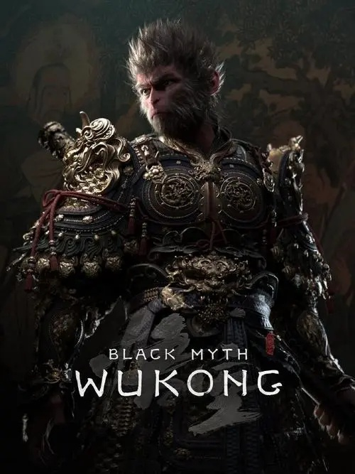

I found Nyx, my little stray cat, in my backyard 2 years ago. In December 2022, a small stray cat was crying loudly in the backyard of my apartment. It was snowing heavily, and she looked cold, so I opened the door and let her in. Then, I decided to adopt her. Unlike other naughty cats, Nyx never bites, causes trouble or knocks things off the table. I love my little cat dearly, and I think she loves living with me just as much. Nyx has made my life as a student abroad so much more great. Nyx comes over and nudges my hand to comfort me whenever I feel down or anxious. I had never owned a cat before, and neither have any experience, but Nyx always seems forgiving of my mistakes. Now, with her companionship, I feel a special kind of happiness every day.
Oct.10 2024
Xiangyu Meng
As a Games & Interactive Media student, I always keep an eye on recent game releases, and over the past six months, quite a few titles have truly amazed me. One game that stood out is Black Myth: Wukong. This is a Souls-like action game uniquely combines elements of ancient Chinese mythology, specifically Journey to the West, creating a fresh and captivating experience. The stunning visuals and impressive action and skill designs really pull players in. It’s remarkable that Game Science, the developer, is the first time making AAA games. Their hard work has clearly paid off, reflected in both player acclaim and impressive sales numbers.
Oct.10 2024
Xiangyu Meng
